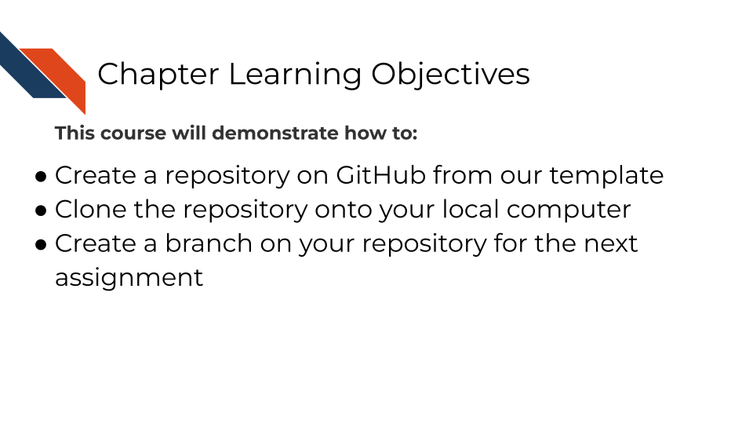

Chapter 2 Setting up for this course
2.1 Phase 1: Creating Your Repository from Template

2.1.1 Step 1: Access the Course Template
- Navigate to the course sandbox template repository
- Look for the green “Use this template” button at the top of the repository page
- Important: Do NOT fork the repository - you must use the template option
2.1.2 Step 2: Configure Your New Repository
- Click “Use this template” → “Create a new repository”
- Fill out the repository creation form:
- Include all branches: Leave unchecked (we only need the main branch)
- Repository name: Choose a meaningful name (e.g.,
your-username-capstone-sandbox) - Description: Add a brief description of your capstone project
- Visibility: Set to Public (required for the automated evaluation system to work)
2.2 Phase 2: Local Setup and Cloning
2.2.1 Step 4: Prepare Your Local Environment
For this course you may use whatever git client (GitHub Desktop, GitKraken, etc) you are most comfortable with, or no git client at all. If you need any recap on how to file pull requests remember you can return to the other courses in this series for reference. Particularly the Advanced Reproducibility course
2.2.2 Step 5: Clone Your Repository
2.3 Phase 3: Branch Creation and Workflow
2.4 Your Setup is Complete…. What are the Next Steps?
This setup process creates the foundation for all your capstone assignments. The first two assignments will follow a similar pattern:
create branch → make changes → commit → push → open PR → receive evaluation → iterate if needed.
![For each assignment, create a new branch. Then make edits to accomplish the task of the assignment. Optionally you may be able to test those edits locally (e.g., building a docker image locally). Git commit and push those edits and open a pull request (or check an existing pull request) to receive evaluation from automated assignment checks. Interpret the results. If you were not successful, troubleshoot and iterate this process as needed, checking your pre-existing pull request for new evaluation results after making additional changes. Or if you were successful in your assignment, submit the verification code to your coursera quiz (or move on to the next section if you are not using coursera or some certification method to take this course)](02-setting-up_files/figure-html/1ExTZsKDHKM0fIi0_tB80qd8cHvqjEDyNJp-OsnvZ19o_g368818bb4f3_0_353.png)
The automated evaluation system depends on this workflow, so following these steps precisely is crucial for getting your validation codes!
Note that the validation codes are really only needed if you are participating in this capstone as a part of the Coursera or Leanpub platforms (for certification). If you are not taking this course for certification, there is no structure in place to verify the validation code you receive.
2.4.1 Reminders of Best Practices for Success while Working with GitHub
- Use one branch per assignment - keeps work organized
- Write descriptive commit messages - helps track your progress
- Regularly push your work - protects your work and enables evaluation
- Use clear titles and descriptions for pull requests - will help you and your collaborators know what the work in the branch is
- Don’t merge your pull request before you get the validation code - outside of this assignment, wait for approval from a team member or collaborator
- Monitor automated feedback - respond to or handle issues identified by evaluation promptly
2.5 Troubleshooting Common Issues
2.5.1 “Repository not found” when cloning:
- Check that the repository is public
- Verify the URL you’ve copy/pasted is correct
- Ensure you have access to the repository